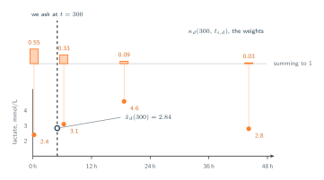
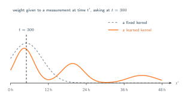

10 · Attention Over Time
Attention as Interpolation
What happens when the score is built from time alone.
In the previous section we introduced how we can compute the continuous time embedding $\boldsymbol{\phi}(t)$ but we not yet discussed where should it be integrated. Following standard positional encoding procedures means adding it directly to the token and letting the standard projections handle the rest. This however bring us back to the complaint from section 06. That is, embedding time directly into the tokens alters its underlying content value, but the attention scores are still computed using query and key representations based entirely on the clinical measurements. The temporal data therefore is technically present within the model but exercises no influence over the attention distribution.
The solution then is to avoid adding the temporal encoding to the existing token entirely. Instead, we can construct the query vector specifically from the target timestamp and build the key vector from the timestamp of the recorded measurement. This structural change leaves the clinical measurement itself, the single number $x_{i,d}$, to serve exclusively as the value. Under this new configuration, the attention score calculation relies only on two primary components, and both of those are strictly temporal.
![Two panels with the same four-row skeleton: two source boxes on top, a score below them, an output at the bottom. On the left, ordinary attention, where the time embedding has been added into the token: token i plus phi of t i supplies the query, and the single box holding token j plus phi of t j supplies both the key and the value. On the right, multi-time attention: the query is phi of t, a time we choose, and the observation is drawn as two boxes, the time embedding phi of t i d giving the key and the single measurement x i d giving the value. A dashed orange arrow from the measurement to the score is crossed out.](../figures/build/time_only_scores.svg)
The Score and the Weights
Consider a specific channel $d$ and a target timestamp $t$, each recorded observation within that channel generates a key derived directly from its own timestamp. The attention score evaluating the relationship between the queried time and a single historical observation is computed as the scaled dot product of their respective embeddings.
Two widths are involved. The first is $d_r$, the width of the time embedding from section 09, so $\boldsymbol{\phi}(t)$ has $d_r$ entries. The second is $d_k$, the width of the space the query and the key are compared in. The two learned projections $W_q$ and $W_k$ carry the embedding from one to the other, so both have shape $d_r \times d_k$:
Both are single vectors of $d_k$ numbers, one asking and one answering, and the score is their scaled dot product:
The division by $\sqrt{d_k}$ is the usual one, keeping the scores from growing with the width of the space they are computed in. The figure below illusrate this process for matrix multiplication.
![The score written out as matrix shapes, drawn at d r equals eight and d k equals four. Step one, on the top row: the time embedding phi of t, a row of eight cells, times the eight by four matrix W q, giving the query q of t, a row of four cells; beside it the same for the observation time, phi of t i d times W k giving the key k of t i d. One column of W q is shaded and so is the single entry of q of t it produces. Step two, below: the four-cell query row times the four-cell key column, giving a single cell, divided by the square root of d k to give the score.](../figures/build/score_shapes.svg)
Passing them through a softmax over the observations of channel $d$ gives weights that are positive and sum to one:
and the answer at time $t$ is those weights applied to the measurements:
Note where the sum runs. It runs over $L_d$, the observations channel $d$ actually has, so the lactate sum has four terms in it and the pulse sum has around two thousand. Nothing is padded and nothing is filled in.
The figure below illustrates the process. At $t = 300$ we have no actual measurement of lactate, and yet multi-time attention can still estimate one, returning $\hat{x}_d(300) = 2.84$.

This Is Interpolation
Look at what those three equations amount to. The calculated weights are strictly non-negative, they sum exactly to one, and they depend exclusively on the relationship between two specific timestamps. The final output functions as a weighted average of the recorded measurement. The model determines these weights based on its own learned interpretation of temporal proximity. This specific structure represents a classic form of interpolation known as kernel regression, and $\kappa_d$ serves directly as the kernel function.
What is new here is where the kernel comes from. Classical kernel regression fixes its shape in advance, most often a bell centred on the query time with one width to tune, and interpolation methods built for irregular clinical data have generally done the same. Here the shape is whatever $W_q$, $W_k$ and the frequencies of $\boldsymbol{\phi}$ turn out to be after training. The resulting attention does not need to be symmetric or decay consistenly as temporal distance increases. It can put weight on a measurement taken eighteen hours later if that is what predicts well.

This specific structural design introduces a significant functional trade-off. Because the attention score calculation entirely excludes the actual measurement values, the mechanism can no longer operate like a standard language model. It loses the ability to prioritize a specific measurement based on the clinical severity or magnitude of the recorded value. For example, a normal lactate reading and a critically high lactate reading would receive the exact same attention weight if they occured at the identical timestemp. This architectural narrowing is an intentional design choice. The system excels at determining exactly when an event occured, but it fundamentally abandons the ability to evaluate what the actual event was during the scoring phase.
Finally, the three conditions established in section 07 are each satisfied without an intermediate representation. Unequal spacings are admissible because the score depends on $\boldsymbol{\phi}(t)$ and $\boldsymbol{\phi}(t_{i,d})$ rather than on positions in a list, so the interval between two observations enters the computation directly. Differing observation counts are admissible because the summation ranges over $L_d$, which is a property of the channel and need not agree across channels. The absence of shared timestamps is admissible because each channel is evaluated on its own set of observation times, and no step of the calculation requires two channels to have been measured together.